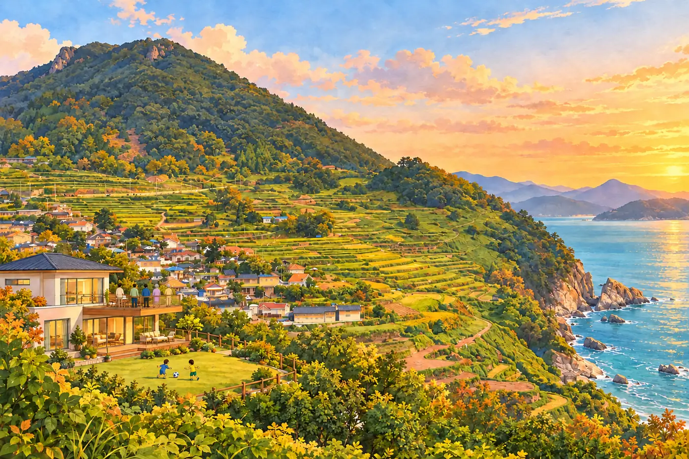
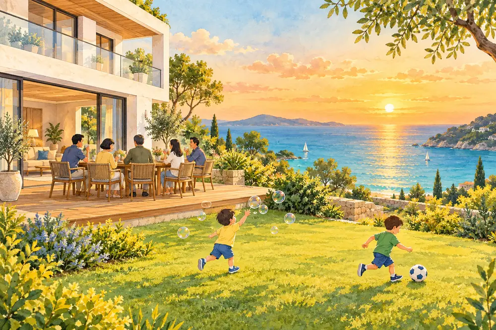
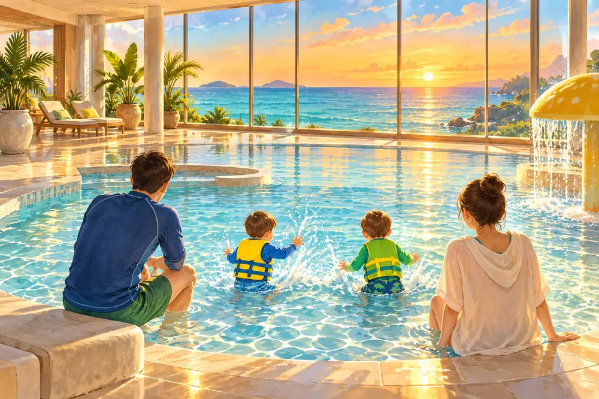
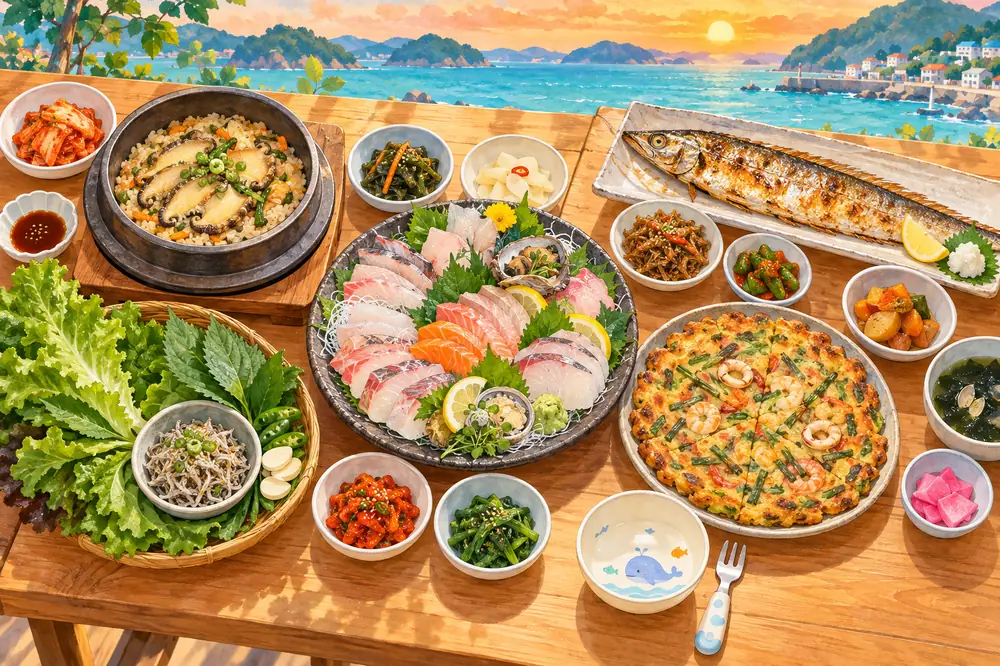
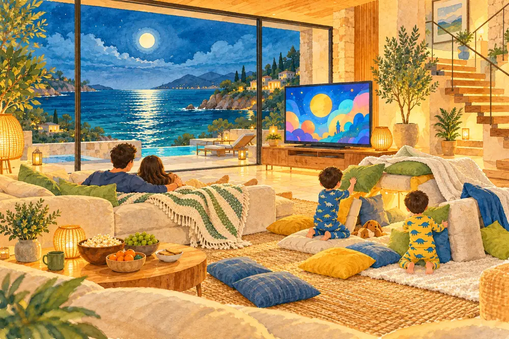
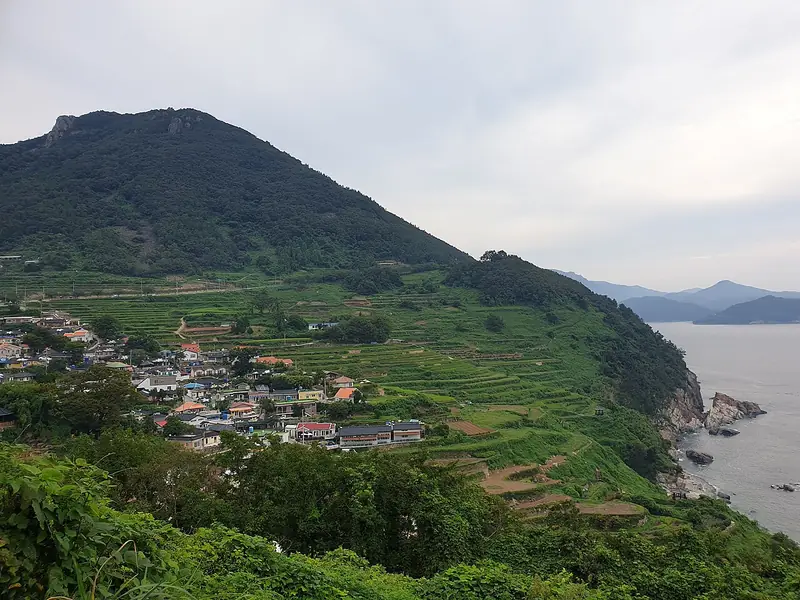
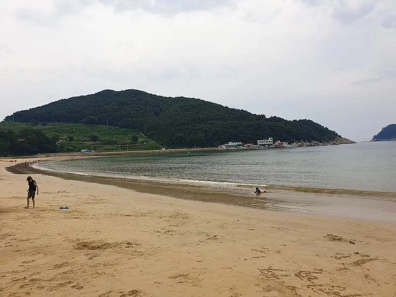
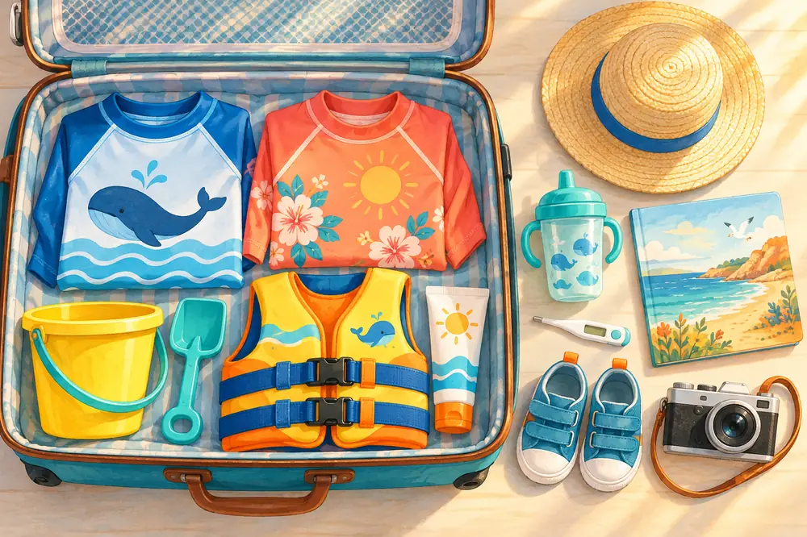

복만식당
5-10분남면바다가 보이는 창가 자리에 주차도 편합니다. 통갈치구이 평이 좋고, 가시 바른 살은 아이들도 잘 먹습니다. 도착 시간에 맞춰 예약할 수 있습니다.
09:00-20:00 · 연중무휴지도

2026. 10. 9 (금) - 10. 11 (일) · 2박 3일
아난티 남해 더하우스에서 일곱 명이 함께 보내는 한글날 연휴! 하담이랑 우연이가 2박 3일 내내 신나게 뛰어놀 계획입니다. 이번엔 좋은 숙소를 실컷 누리는 게 목표라, 리조트 안에서 놀고 먹는 법을 중심으로 정리했습니다. 가끔 밥 먹으러 나갈 곳과 준비물도 함께 있습니다. 모두 초안이니 단톡방에서 의견 주면 고쳐 나갑니다.
이번 여행의 주인공은 숙소입니다. 회원 보유 객실이라 공식 홈페이지의 리뉴얼된 더하우스와는 인테리어가 다르고, 가든형과 방·욕실 수는 같지만 자쿠지와 프라이빗 풀은 없습니다.

기본은 "리조트에서 놀고, 하루 한 번쯤 밥 먹으러 나가기"입니다. 나가더라도 차로 10-20분 안쪽만 갑니다.
10/8 기준 Open-Meteo 모델 예보입니다. 토요일 비는 양이 적고, 와도 실내 수영장과 키즈존이 있어 일정이 거의 안 바뀝니다. 저녁엔 15도 안팎이라 겉옷이 필요합니다.

아이들 전용 키즈클럽은 없지만, 수영장과 무료 놀거리를 엮으면 하루가 금방 갑니다. 더하우스는 해안 쪽에 있고, 리조트 안은 걸어서 다닙니다.

실내풀(수심 0.8m), 키즈풀(0.6m), 히노키풀, 노천탕이 한 공간에 있습니다. 아침 일찍이 한산합니다. 래쉬가드나 수영복이 필수이고, 아이들은 팔 튜브나 구명조끼를 씁니다. 가끔 실수할 수 있으니 물놀이 기저귀를 입힙니다.
일반 튜브, 물총, 공, 외부 음식은 금지입니다. 문의 055-860-0407
10/11이 올해 마지막 운영일이라 이번 주말이 시즌 끝입니다. 성인풀 수심이 1.2m라 키 120cm 미만은 구명조끼가 필수이고, 인포데스크에서 무료로 빌려줍니다. 풀사이드 바도 엽니다. 날씨에 따라 닫을 수 있습니다.
책 8,000권짜리 서점 안에 키즈존이 있습니다. 수입 그림책, 팝업북, 블록, 나무 장난감이 있어서 비 오는 날 사실상 키즈카페 역할을 합니다.
이터널저니 2층 계산대에서 할리갈리, 젠가, 루미큐브, 다빈치코드 같은 게임을 빌려 키즈존 안에서 합니다. 아이들이 책 볼 때 어른들은 루미큐브 한 판 하면 됩니다.
이터널저니 데스크에서 어린이 골프채와 공을 빌려 잔디광장에서 칩니다. 비나 강풍엔 쉽니다.
잔디광장길은 평탄해서 아이들이 뛰어놀기 좋습니다. 해안길은 바위 위 나무 데크로 등대와 더하우스 쪽까지 이어지고, 해 질 녘(일몰 18:00)이 제일 예쁩니다. 저녁엔 조명이 켜집니다.
카트를 타고 리조트와 해안을 한 바퀴 돕니다. 회당 한 팀만 받아서 미리 예약해야 합니다. 아이들이 특히 좋아할 만합니다.
예약 055-860-0100
미니 연날리기와 훈민정음 키링 만들기입니다. 회당 5팀 선착순이라 금방 찹니다. 대상이 5세 이상이라 우리 아이들이 되는지 먼저 물어봅니다.
신청 폼 · 문의 055-860-0689
나가지 않고도 아침, 점심, 저녁, 야식이 다 해결됩니다.
라이브 그릴, 해산물, 한식, 디저트가 나오는 뷔페입니다. 성인 77,000원, 소인 45,000원으로 비싼 편이라 하루쯤 기분 내는 용도로 좋습니다.
한우 스테이크와 라이브 스테이션이 있고 와인이 무제한입니다. 성인 130,000원, 소인 65,000원입니다. 첫날 저녁을 여기서 먹으면 장거리 운전 후에 아무도 고생하지 않아도 됩니다. 일찍 마감되니 오늘 예약합니다.
예약 055-860-0403
남해 치킨세트 35,000원, 해물 치즈떡볶이 35,000원, 이터널저니 저녁 메뉴(갈비찜, 볶음밥, 파스타)는 20시까지 주문됩니다. 주문이 마감 직전에 몰리니 일찍 시킵니다.
닭한마리 전골, 볶음짬뽕, 치킨카츠와 주먹밥, 가라아게, 불고기 덮밥이 있습니다. 조용한 라운지 바 분위기라 아이들 재우고 어른들끼리 가기 좋습니다. 일부 메뉴는 방으로 배달도 됩니다.
워터하우스 안 베이커리는 소금빵, 치즈빵이 일찍 떨어집니다. 다음 날 아침거리로 전날 사 둡니다. 이터널저니 1층 마켓은 음료와 간식 정도라 생필품과 먹을거리는 미리 사 오는 게 낫습니다.

장보기 팀 두 명이 차 한 대로 나가 회를 떠 옵니다. 미조항 유서방 회 떠가시다는 3-4시간 전 전화 주문이 필수입니다. 칼과 도마, 초장은 챙겨 갑니다.
78평 2층 집, 잔디 정원, 바다가 보이는 데크가 다 우리 차지입니다. 아이들 노는 동안 어른들은 데크에서 커피 한 잔.

방 4개에 계단까지 있으니 숨을 곳이 넘칩니다. 할머니가 술래를 맡으면 최고입니다. 계단에선 뛰지 않기 약속부터.
비눗방울 총과 말랑한 공 하나면 잔디 정원이 놀이터가 됩니다. 아이들이 뛰는 걸 데크에서 내려다볼 수 있습니다.
작은 간식이나 스티커를 집 안 곳곳에 숨기고 손전등으로 찾게 합니다. 저녁에 불 끄고 하면 더 신납니다.
물놀이 장난감 몇 개 넣어 주면 아이들 목욕이 놀이가 됩니다. 아이들 재운 뒤엔 어른들 차례.
TV가 3대라 아이들은 거실에서 만화영화, 어른들은 다른 방에서 따로 봐도 됩니다. 쿠션과 이불로 요새를 지어 주고 팝콘을 곁들입니다.
해 지는 시간(18:00)에 데크에 모여 일곱 명 단체 사진을 찍습니다. 삼각대가 있으면 좋습니다. 사진은 구글포토 공유 앨범으로.
스케치북과 크레파스로 오늘 본 바다, 수영장, 할머니를 그려 봅니다. 여행 앨범 첫 장으로 좋습니다.
아이들 재우고 데크나 거실에서 루미큐브, 할리갈리 한 판. 리조트 라이브러리에서 빌려 와도 됩니다(키즈존 안에서만 쓸 수 있으니 직접 챙기는 게 편합니다).
하루 한 번쯤 나가 먹을 때 고를 곳입니다. 리조트에서 10-20분 거리인 남면·미조 쪽이 위에 있습니다. 아이와 가기 편하고 가족 단위 후기가 좋은 곳만 14곳 남겼습니다. 이동 시간은 아난티 기준 추정치입니다. 평점은 표본이 작은 사이트 집계라 참고만 하고, 가기 전날 지도 앱에서 영업 여부를 꼭 확인합니다. 10/9-10/11과 겹치는 정기 휴무는 아래 목록에 없습니다.
바다가 보이는 창가 자리에 주차도 편합니다. 통갈치구이 평이 좋고, 가시 바른 살은 아이들도 잘 먹습니다. 도착 시간에 맞춰 예약할 수 있습니다.
오션뷰에 3층 루프탑이 있습니다. 숙소에서 가까워 첫날 체크인 전에 쉬기 좋습니다.
얇고 바삭한 파전이 대표 메뉴라 아이들도 잘 먹습니다. 마을 입구라 주차가 비교적 쉽습니다.
솥밥이라 아이들도 편하게 먹습니다. 대기가 긴 집이라 연휴엔 개점 시간에 맞춰 가는 게 좋습니다. 구글 4.5
포장 전문점이라 숙소 데크에서 먹을 회로 1순위입니다. 포장이 깔끔하고 고등어회 평이 좋습니다. 픽업 3-4시간 전에 전화로 주문해야 하고 매장 식사는 안 됩니다.
수요미식회에 나온 집입니다. 전복죽은 아이들 몫으로 좋습니다. 점심에는 붐빕니다.
아기의자와 유아 식기가 있습니다. 피자는 포장도 돼서 숙소 저녁으로 좋습니다. 네이버 예약이 됩니다.
아기의자가 있고 유모차로 들어갈 수 있으며 테이블 간격이 넓습니다. 바다와 독일마을이 함께 보이고 무료 주차장도 넓습니다.
슈니첼은 사실상 돈가스라 아이들이 제일 잘 먹을 독일 음식입니다. 구글 4.3
음식이 빨리 나와서 어린아이와 부모님을 모시고 가기 좋다는 소개가 있습니다. 독일마을 가는 길에 들르기 좋습니다.
한 상 차림이 정갈하고, 솥밥은 아이도 먹기 쉽습니다. 구글 4.7
대화에 나온 "남해시장 가서 회 떠다 먹기"는 이곳을 말합니다. 포장이 되고 연중무휴로 소개돼 있습니다. 5일장(2·7일)은 여행 기간과 안 겹치지만 상설 가게는 엽니다.
아기의자가 넉넉하고 주차장이 큽니다. 아이들 밥으로 가장 실패가 적은 곳입니다.
회를 사러 남해읍에 갈 때 아이들 몫으로 같이 사 오기 좋습니다.
리조트가 지루해지면, 아니면 밥 먹으러 나간 김에 들를 만한 곳만 남겼습니다. 모두 리조트에서 차로 20분 안쪽입니다.
바다 위로 뻗은 전망대입니다. 엘리베이터가 있어 유모차로도 올라가고, 바닥 일부가 유리라 아이들이 신기해합니다.

바다로 쏟아지는 계단식 논입니다. 길이 좁고 가팔라 유모차는 차에 두고 걷습니다. 다랭이맛집 점심과 묶기 좋습니다.
사촌해변은 작아서 아이들을 한눈에 볼 수 있고 소나무 그늘이 있습니다. 모래놀이 세트만 챙겨 가면 한 시간은 금방입니다.

2km 백사장에 모래가 고와 남해에서 모래놀이로는 최고입니다. 미조항 힙한식 점심과 묶으면 좋습니다. 조개껍데기가 있어 아쿠아슈즈를 신깁니다.

양에게 먹이를 주는 목장입니다. 가족당 먹이 바구니 1개를 주고, 주말엔 양몰이 공연도 있습니다. 진입로가 좁고 가팔라 운전에 주의합니다.
체크하면 이 기기에 저장됩니다. 가족마다 각자 폰에서 체크하면 됩니다.

아난티에 물어봐서 답을 받은 것과 아직 남은 것입니다.
| 어디 | 물어볼 것 |
|---|---|
| 아난티 대표 055-860-0100 |
|
| 워터하우스 055-860-0407 | 회원 무료 입장 인원, 예약이 필요한지, 유아 구명조끼 대여 |
| 르블랑 055-860-0403 | 10/9 (금) 디너 뷔페 7명 예약 (일찍 마감) |
| 이터널저니 055-860-0688 | 점심·저녁 예약이 필요하면, 아이 메뉴 |
| 카트 투어 · 키즈 클래스 055-860-0689 | 카트 투어 시간 예약(대표번호 0100), 키즈 클래스에 36개월 넘은 아이가 되는지 |
| 유서방 회 떠가시다 | 당일 낮에 7명분 모듬회 주문, 픽업 시간 |